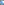

I.47 · Pythagorean theorem¶
Statement
In a right triangle the square on the hypotenuse equals the sum of the squares on the legs.
Why this theorem: Splits the field: area/analytic methods find it trivial, Euclid needs the Bride’s Chair, and the AlphaGeometry rule calculus cannot even state a² + b² = c².
Realizations¶
Euclid
prose Elements I.47 — Euclid card
In right-angled triangles the square on the side subtending the right angle is equal
to the squares on the sides containing the right angle.
The Bride’s Chair: an equality of *areas*, not of numbers.
Source: euclid/resources/heath/enunciations.json
LeanEuclid
theorem proposition_47 — LeanEuclid card
theorem proposition_47 : ∀ (a b c: Point) (AB BC AC : Line),
formTriangle a b c AB BC AC ∧ (∠ b:a:c : ℝ) = ∟ →
|(b─c)| * |(b─c)| = |(b─a)| * |(b─a)| + |(a─c)| * |(a─c)| :=
Stated metrically (lengths in ℝ); the proof isolates orientation lemmas Euclid left implicit. SMT_VERIF-dependent.
Source: Prop47.lean#L16-L18
GeoCoq
theorem proposition_47 — GeoCoq card
Lemma proposition_47 :
forall A B C D E F G H K,
Triangle A B C -> Per B A C -> SQ A B F G -> TS G B A C -> SQ A C K H -> TS H C A B -> SQ B C E D -> TS D C B A ->
exists X Y, PG B X Y D /\ BetS B X C /\ PG X C E Y /\ BetS D Y E /\ EF A B F G B X Y D /\ EF A C K H X C E Y.
Faithful to Euclid: equal *figures* (EF), with area axioms derived from the Euclidean class.
Source: proposition_47.v#L10-L13
mathlib4
theorem EuclideanGeometry.dist_sq_eq_dist_sq_add_dist_sq_iff_angle_eq_pi_div_two — mathlib4 card
theorem dist_sq_eq_dist_sq_add_dist_sq_iff_angle_eq_pi_div_two (p₁ p₂ p₃ : P) :
dist p₁ p₃ * dist p₁ p₃ = dist p₁ p₂ * dist p₁ p₂ + dist p₃ p₂ * dist p₃ p₂ ↔
∠ p₁ p₂ p₃ = π / 2 := by
An iff, in any real inner-product space; reduces to the vector identity ‖x−y‖² = ‖x‖² + ‖y‖² when ⟪x,y⟫ = 0.
Source: RightAngle.lean#L326-L328
AlphaGeometry
gap — AlphaGeometry card
DD+AR’s algebraic reasoning is linear over angle, ratio, and distance tables; a² + b² = c² is not expressible.
Newclid
rule R57_PYTHAGORAS_THEOREM — Newclid card
PythagoreanPremises A B C => PythagoreanConclusions A B C
# DEACTIVATED_RULES = { R57_PYTHAGORAS_THEOREM }
Added as a special rule, then deactivated by default as problematic.
Source: all_rules.py
JGEX
generic examples/visual-proofs/pythagoras.gex — JGEX card
Algebraic methods (Wu / Gröbner / area) certify it generically; in the area method it is immediate from the Pythagoras difference P_BAC = 0.
Source: examples
geometor.model
witness verify._build_pythagorean — geometor.model card
A, B, C = m.set_point(0, 0), m.set_point(3, 0), m.set_point(0, 4)
m.assert_perpendicular(m.construct_line(A, B), m.construct_line(A, C), by="Given")
sp.simplify(quadrance(A, B) + quadrance(A, C) - quadrance(B, C)) == 0
Exact quadrance identity on the 3-4-5 figure (L1).
Source: codes/src/geometor/codes/verify.py
Climbing the ladder in GEOMETOR¶
L1 — exact instance. geometor.model builds one figure with exact coordinates and checks the conclusion by zero_test: Exact witness verified (3 points, 2 lines, 0 circles) (status verified). See the witness entry.


L2 — generic. Replace the coordinates by free symbols x, y, p, q, t. The right angle at A is built in: AC is AB rotated by 90 degrees and scaled by t. The conclusion’s numerator reduces to 0, so the theorem holds for every configuration outside the degenerate set:
(p, q) != (0, 0) (A != B)
t != 0 (A != C)
Computed at build time by geometor.codes.generic.generic_witness().